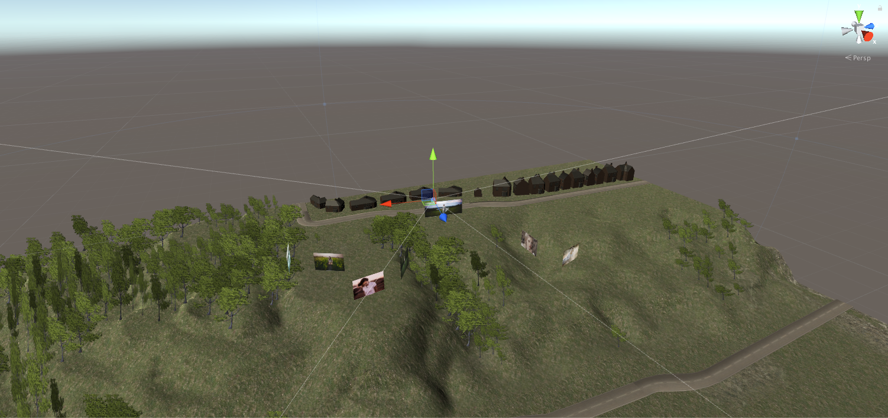
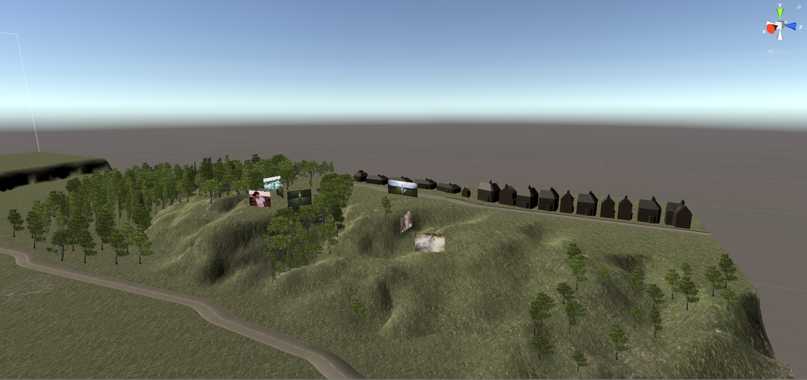

The Bluffs 3D Scene
- Final Project for ARTS 255: Dynamic Interface Design
The Challenge:
For my final project in my Dynamic Interface Design class (Fall 2016), which explores the expanding field of interface design
for online interactive media, I wanted to demonstrate my skills that I had been building in both this class as
well as my computer graphics class that I had been taking during the same semester. By applying my passions outside
of my academic committments, I focused my efforts towards creating a virtual, 3D scene.
The Concept:
The Prairie Bluffs Conservation Center is a beloved landscape of my hometown where I've taken many portraits as a growing
photographer. In efforts to recreate fond memories of this place, I created a scene in Unity 3D, which is also
compatible with VR devices. The user explores where I've taken different photos specifically as well as the general
feel of the terrain. Although modelled off of the landscape with Google Satellite, this scene is in truth a fantastical
perception of the conservation- an extension of my own memories- through which the user can better understand
my nostalgia and romanticization of this place.



Final Thoughts:
I'm looking forward to visiting this place again soon and add more photos to this visual collection. I would like to extend
this project by creating other 3D scenes of locations that I frequent when shooting portraits. In continuing
this project, I will incorporate packages to make this 3D scene compatible with VR decides such as Google Cardboard
or HTC Vive.